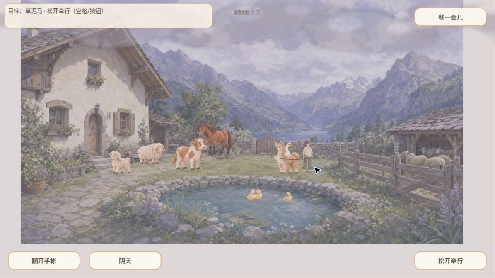
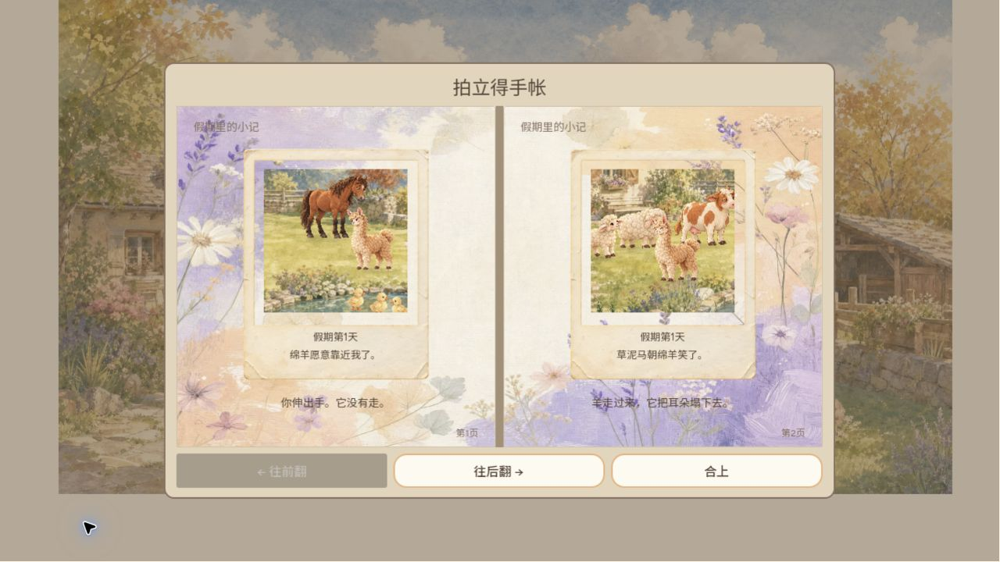
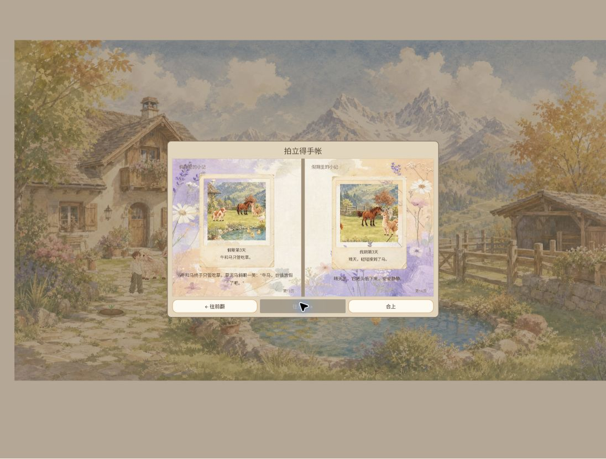
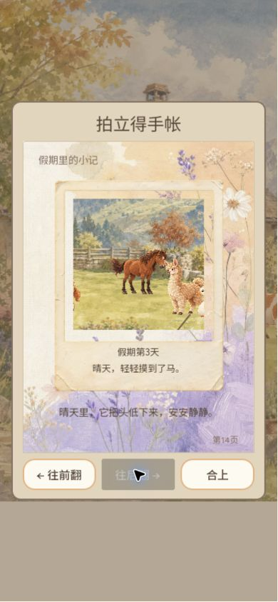

独立 QA · 实际浏览器游玩 · 2026-10-03（北京时间）
《悠长的假期》体验报告
小院的美术与手账，已经能让人愿意停下来；真正需要加强的是“我做了什么、动物怎样回应、这段记忆为什么被留下”的连续感。
本轮从用户既有存档的假期第 2 天进入，自然游玩至第 3 天，进行了散步、动物互动、羊驼牵行、环境热点、花圃浇水、垂钓尝试、手账浏览、退出与刷新回访。没有重置用户存档，没有修改游戏代码。
覆盖结论：这是一轮主要玩法体验报告，不是全内容验收通过证明。钓获→投鱼、花朵成熟→收获、鹅骑马自然触发及长期关系变化均未完成闭环。音频、低动效和真机触屏也未验证。
版本与证据范围
| 阶段 | 实际构建 | 范围 |
|---|
| 主要游玩 | game-5e42fd9 | 页面 DOM data-build 实测；既有存档第 2→3 天，主要玩法与14页手账。 |
| 刷新后补验 | game-922be64 | 体验过程中线上更新。加载、跨版本恢复、390×844模拟竖屏、补测钓鱼。不能用旧构建游玩覆盖新构建全部功能。 |
| 环境 | Windows / Chrome | 自然视口约1096×830，另测试1280×720和390×844；结束前恢复自然视口。初期曾出现视口重排，因此误点不直接归为游戏BUG。 |
实际游玩感受
进入与闲逛：花纸标题页、水彩院子、毛毡动物形成了统一而温暖的主体验。没有任务催促或失败惩罚，点草地走过去很容易理解。可走空间较集中，画面里很多看起来能走的门前与岸边位置并不能直接抵达；玩家容易先以画面判断空间，再碰到隐形边界。这里更适合改善空间可读性，不需要添加任务箭头或红点。
陪伴感最强的是牵羊驼：按空格牵起后出现绳索，沿草地移动时羊驼跟随，再按空格松开，它恢复自由活动。行为、角色关系和结果都能直接看到。相比之下，绵羊和马的招呼主要通过爱心、轻微姿态和一句话说明；动物聚在一起时，实际接受互动的是谁不总能一眼辨认。
环境热点有惊喜，但“动作发生在哪里”仍可更清楚：花箱出现蝴蝶，栅栏有草叶与羽毛，拨水显示涟漪和对应短句，适合这种轻松游戏。部分时候旅人仍站在草地上，文案已经写“指尖轻碰岸边”；动作距离和可见角色姿态之间的联系较弱。这是体验建议，尚未按固定位置多次复现为技术缺陷。
花圃与钓鱼：花圃可出现浇水提示，重复点击得到“今天已经浇过了”。没有观察到完整播种、成熟和收获过程。垂钓能抛竿、等待、显示红浮标和“收杆！”；错过后能再试，离开钓位也能继续散步。本次浏览器控制往返使多次收杆输入落在窗口之后，因此没有确认钓到鱼。最后做过连续空格补测，但目标切换到了羊驼互动，不能当作钓鱼闭环通过，也不能据此宣称正常玩家无法钓鱼。
手账是最成熟的留园理由：双页布局、纸张边框、假期日期和一次性题词，让偶遇有被保存的感觉。逐页阅读了14页，包含鹅卧姿、鸭群、牛、羊、羊驼和马的事件。第3天的记录说明世界观察仍会产生新记忆；不过本轮没有完整捕获新照片显影动画，旧相册中的鹅骑马和第一条鱼不能算作本轮亲自触发。
长期节奏：自然跨天是温和的，没有明显惩罚；但在完成眼前几种交互后，下一步的兴趣主要依赖等待随机事件。建议优先让已经发生的互动留下更可读的后续回应，而不是用日常清单填补空白。
体验问题与BUG候选
| 编号/优先级 | 观察与复现方法 | 判断及建议 |
|---|
| EXP-001 · P2 | 晴阴构图不连续。在院子自然停留跨越晴阴切换；房屋、池塘、远山、围栏的形态和透视明显变化，像换了一座院子。主要构建中多次观察。 | 已确认的体验问题，既有策划已有同构图改进方向。优先统一空间构图，天气只改变光、云和天气层；本轮未测量过渡时长。 |
| EXP-002 · P2，待复核 | 既有照片题词与主体不对应。打开手账第1页，题词为“绵羊愿意靠近我了”，画面只见马、羊驼与鸭子，未见绵羊。升级后仍可见。 | 现象可见，但照片创建版本未知，不能归因于最新构建新生成逻辑。需要用干净测试档重新触发同事件，核查被摄动物是否入镜。 |
| EXP-003 · P2 | 新构建加载封面与作品风格不符。刷新加载 game-922be64 时，封面显示科幻迷宫与机器人，而不是小院。 | 已确认视觉一致性问题。建议换成同风格院子或花纸封面。本次仅观察一次加载，不声称每次刷新都会出现。 |
另有体验建议：默认高宽比下顶部目标和底部短句字号较小；可走范围应与地面视觉更一致；动态情境动作应让目标变化更容易察觉。以上没有伪装成已定位根因的程序BUG。
恢复、兼容与加载
从暂停菜单选择“回到门口”，确认保留假期后返回标题。刷新命中新构建，重新进入仍是第3天；逐页回到第13、14页，照片与题词保留，末页向后按钮禁用。这个特定存档样本的跨版本恢复通过，不能外推所有旧存档或损坏档。
390×844模拟竖屏下，手账由双页转为单页，13→14页翻页、合上与末页禁用可正常使用。院子画面裁切更明显，起点主要能看见房屋和左侧动物。未用真手机，不声称触摸、Safari或移动性能通过。
新构建加载界面显示总资源56.0 MiB（解压后），观察到72秒时87%、82秒时98%，随后进入标题。该数字是界面标注的解压后数据量，不是网络压缩传输量；这只是本机本次加载样本，网络状况尚未隔离。两次读取浏览器warn/error记录均为空，但没有帧率、内存或长时间监控。
实际覆盖表
| 项目 | 结果 |
|---|
| 标题、入院、散步、暂停/恢复、退出确认 | 已实际操作 |
| 绵羊/马招呼、羊驼牵行与松开 | 已见对应反馈；牵行闭环完成 |
| 拿草、前往羊驼 | 已操作，草束随后消失；完整喂食瞬间未捕获，证据有限 |
| 花箱、栅栏、池岸热点 | 已见蝴蝶、草叶/羽毛、拨水对应反馈 |
| 花圃 | 已确认浇水状态与当日重复提示；成长收获未覆盖 |
| 钓鱼 | 抛竿、等候、咬钩、重试/离开已体验；钓获及投鱼未确认 |
| 天气/时间 | 晴阴变化、第2→3天已观察；四季与长周期未覆盖 |
| 摄影手账 | 14页内容与分页已阅读，新日期记录可见；新照片显影未完整观察 |
| 刷新/升级恢复 | 第3天及14页手账保留，此样本通过 |
| 手机布局 | 模拟竖屏单页手账与HUD已查；真机未查 |
| 自然鹅骑马、稀疏关系记忆、音频、低动效 | 未验证，不计通过 |
截图证据

羊驼牵行：绳索连接与随行位置。
第1页旧照片：绵羊题词与可见主体不对应，生成版本未知。game-922be64 加载封面：科幻迷宫与小院美术不一致。
刷新升级后，第13、14页及第3天题词保留。
390×844模拟竖屏：单页相册与末页禁用。本轮判断
值得继续体验，尚不应给出“全内容体验完成/全量发布通过”。视觉氛围、牵行与手账已形成作品的吸引力；优先解决天气空间连续性、照片事件对应与加载首印象，再把互动反馈做得更具对象差异。下一轮应使用独立测试存档，补齐钓获投鱼、播种收获、自然偶遇和长期回访证据。本轮只测试和记录，没有开发或发布任何修复。
原始观察：JSON记录 · 问题台账：bugs.json